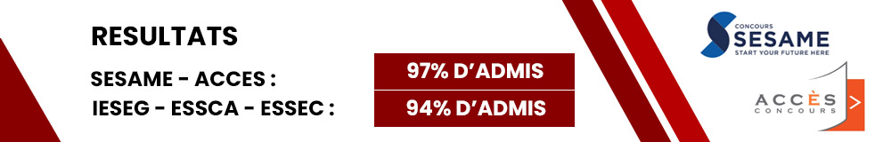
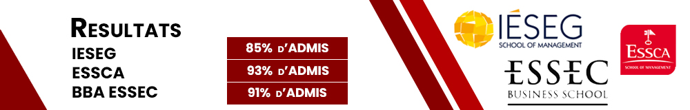

Formules d’inscription aux STAGES
Nos préparations se déroulent sur une semaine et le format de chaque stage est identique en termes de volume horaire.
Le contenu des stages est toutefois différent de sorte à permettre aux élèves de suivre plusieurs stages sur l’année et maximiser ainsi leurs chances de succès aux concours.

STAGE DE PREPARATION DES 2 CONCOURS SESAME et ACCES
Stage TOUSSAINT 1 : du samedi 22 au vendredi 28 octobre 2022
Tarif : 900€
Les élèves ont la possibilité de s'inscrire à un stage préparant soit aux deux concours sésame et accès, ou au concours sésame seul ou au concours accès seul
STAGE DE PREPARATION DES 2 CONCOURS SESAME et ACCES
Stage NOEL 1 : du samedi 17 au vendredi 23 décembre 2022
Tarif : 900€
STAGE DE PREPARATION DU CONCOURS SESAME SEUL
Stage NOEL 1 : du samedi 17 au vendredi 23 décembre 2022
Tarif : 900€
STAGE DE PREPARATION DU CONCOURS ACCES SEUL
Stage NOEL 1 : du samedi 17 au vendredi 23 décembre 2022
Tarif : 900€
Les élèves ont la possibilité de s'inscrire à un stage préparant soit aux deux concours sésame et accès, ou au concours sésame seul ou au concours accès seul
STAGE DE PREPARATION DES 2 CONCOURS SESAME et ACCES
Stage FEVRIER 1 : du samedi 18 au vendredi 24 février 2023
Tarif : 900€
STAGE DE PREPARATION DU CONCOURS SESAME SEUL
Stage FEVRIER 1 : du samedi 18 au vendredi 24 février 2023
Tarif : 900€
STAGE DE PREPARATION DU CONCOURS ACCES SEUL
Stage FEVRIER 1 : du samedi 18 au vendredi 24 février 2023
Tarif : 900€
Stage 100% SESAME : 1 week-end – 15 h
Stage 100% ACCES : 1 week-end – 15 h
Plusieurs dates sont possibles pour ces stages week-ends de sorte à permettre aux élèves qui le souhaitent de suivre les 2 stages de revision (un SESAME, un ACCES).
Tarif : 600€
PREPARATION AUX ORAUX
Lors des stages de préparation aux écrits, il est prévu un cours de présentation des épreuves orales mais pas de mise en situation ni d’oraux d’entraînement.
Tant que les écrits ne sont pas passés, il est en effet important que les élèves se concentrent sur ces derniers de sorte à maximiser leurs notes et donc leur classement et rang d’admissibilité.
En revanche, un module spécifique de préparation aux oraux des différentes écoles aura lieu une fois les épreuves écrites passées. Les élèves suivront alors des cours sur les oraux qu’ils seront amenés à passer : entretien individuel, entretien collectif, oral de langue.
Outre des cours de communication qui détailleront les modalités des épreuves et critères d’évaluation spécifiques aux écoles, les élèves passeront aussi des oraux d’entraînement face à des jurys de concours. Ils bénéficieront de debriefings et de conseils individualisés.
Plusieurs dates seront proposées les week-ends d’avril/mai ou pendant les vacances scolaires.